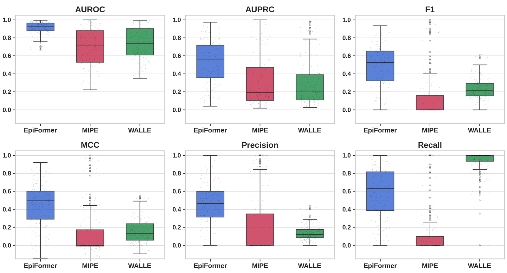

TL;DRAn epitope depends on the antibody that binds it, yet antibody-aware predictors encode the antigen and the antibody separately and fuse them only at the end. EpiFormer lets the two chains attend to each other inside each layer of a geometric graph encoder and trains with objectives built for sparse labels. On the AsEP benchmark, it raises F1 from 0.337 to 0.482 over the strongest of 19 baselines. On the harder epitope-group split, whose test epitopes are absent from training, it raises F1 from 0.254 to 0.305.
Abstract
Antibodies neutralize foreign antigens by binding to specific surface regions called epitopes. Computational epitope prediction is critical for understanding immune recognition and guiding antibody engineering. However, existing methods face three fundamental challenges: antibody-aware models encode each chain independently and combine them only at a late stage, failing to capture co-dependent structural features that define binding interfaces, whereas severe class imbalance and scarcity of known antibody-antigen complexes render standard training objectives ineffective. We propose EpiFormer, a general encoder-decoder framework that addresses these challenges jointly. Our key design principle is interleaved cross-attention within GNN encoding layers, enabling bidirectional antigen-antibody information flow throughout representation learning rather than only at the output. This early-fusion principle is backbone-agnostic, providing consistent gains across GNN architectures from simple GCNs to equivariant models. We further show that sparsity-aware objectives are effective when paired with early-fusion architectures for the epitope prediction task. EpiFormer improves over the previous best method by over 40% in F1 score on standard benchmarks, demonstrating generalizability and cross-dataset transferability. Notably, two behaviors of EpiFormer emerge from end-to-end training alone, where the learned cross-attention gates favor antigen-to-antibody information flow, consistent with the asymmetric roles of the two chains at the binding interface, and the model's preference for geometric over evolutionary features aligns with the established finding that epitope residues are not evolutionarily conserved.
The epitope depends on the antibody
An epitope is the region of an antigen's surface that a given antibody binds. The AsEP benchmark labels an antigen surface residue as epitope when it lies within 4.5 Å of the antibody, and asks a model to predict these labels from the structures of the two chains. Different antibodies bind different regions of the same antigen. Hence, a predictor that scores the antigen alone can at best find surface that tends to be bound by some antibody, not the epitope of the antibody at hand.
Antibody-aware methods condition on the antibody, but they encode the two chains independently and combine them only after encoding, a design we call late fusion. The structural features that define a binding interface depend on both chains, since the complementarity-determining regions (CDRs) of the antibody adapt their conformation to the epitope. The labels are also sparse. In the median complex of the epitope-ratio test split, 9% of the antigen surface residues belong to the epitope, and AsEP holds 1,721 complexes in total.
Interleaved cross-attention in a geometric encoder
We represent each chain as a residue graph with one node per residue, placed at its C$\alpha$ atom. Each node carries geometric features that encode its residue type and the local geometry of its backbone. Edges carry four relations, namely sequential neighbors ($\rho_1$), short-range sequence coupling ($\rho_2$), $K$-nearest neighbors ($\rho_3$), and contacts within 8 Å ($\rho_4$). EpiFormer takes the antigen graph $\mathcal G_{\text{ag}}$ and the antibody graph $\mathcal G_{\text{ab}}$ and returns, for each antigen residue, the probability that it belongs to the epitope.
Encoder. Two parallel encoders process the antigen and the antibody. Within each block, a relation-aware E(3)-equivariant graph neural network (EGNN-R) passes messages along the edges of one chain, with a separate message function for each relation, and updates both the residue features and their coordinates,
where $d_{ij}$ is the squared distance between residues $i$ and $j$, $\boldsymbol\delta_{ij}$ their displacement, $\mathbf f_{ij}$ the edge features, and $\gamma$ a radial basis expansion. In parallel, multi-head cross-attention (MHCA) lets each chain attend to the residues of the other, and a learnable gate $\alpha_c$ balances the geometric update $\mathbf H_c^{\text{intra}}$ with the cross-chain context,
where $\bar c$ denotes the other chain and FFN is a two-layer feed-forward network.
Decoder. The decoder refines the two embeddings with $J$ further layers of bidirectional cross-attention and then scores each pair of an antigen and an antibody residue in both directions,
A learnable combination of the two score maps yields the interaction map $\hat{\mathcal E}_{\text{bg}}=\sigma(\mathbf Z)\in[0,1]^{n\times m}$ between the $n$ antigen and $m$ antibody residues, and the mean of the two largest entries in each row yields the epitope probability of each antigen residue,
where $\operatorname{top}_2(i)$ holds the two antibody residues with the highest interaction probability for antigen residue $i$.
Joint objective. We train EpiFormer with a joint objective. The node term combines a class-reweighted binary cross-entropy, a Dice loss that measures the overlap between the predicted and the true epitope, and a sparsity term that matches the predicted epitope size to the true one. Two auxiliary terms supervise the interaction map with the true contacts and classify inter-chain distances into four bins,
Early fusion
The antigen and the antibody exchange information in each encoder block, rather than only in the decoder.
Backbone-agnostic
With a plain GCN in place of EGNN-R, the framework still reaches 0.447 F1 and outperforms all 19 baselines.
Built for sparse labels
The sparsity term alone raises F1 from 0.329 to 0.461, since it keeps the model from labeling most residues as epitope.
The loss terms
With $y_i$ the label of antigen residue $i$, $\hat y_i$ its predicted probability and $\pi_{\text{epi}}>1$ a weight on the positive class, the node terms are
The edge term applies a positive-class-reweighted binary cross-entropy to all antigen-antibody residue pairs, with $E_{ij}=1$ when the two residues lie within 4.5 Å,
The geometric term $\mathcal L_{\text{geo}}$ classifies the distance between near-contact residue pairs into the bins 0–4, 4–8, 8–16, and 16–32 Å with a class-balanced cross-entropy. Distances enter only as training targets and do not reach the model at inference.
Results on AsEP
We compare EpiFormer with 19 baselines from five families, namely epitope and paratope predictors, protein binding-site predictors, protein interaction and docking models, structure and affinity predictors, and a molecular property model. We retrained each baseline on AsEP with its published configuration. AsEP comes with two splits. The epitope-ratio split balances the fraction of epitope residues across the partitions, and the epitope-group split keeps the test epitopes out of training.
| Method | Epitope-ratio split | Epitope-group split | ||||
|---|---|---|---|---|---|---|
| AUC | F1 | MCC | AUC | F1 | MCC | |
| Epitope and paratope prediction | ||||||
| EpiGraph | .790 | .064 | .089 | .779 | .056 | .096 |
| MIPE | .827 | .337 | .356 | .740 | .172 | .206 |
| WALLE | .808 | .203 | .208 | .713 | .170 | .143 |
| DiscoTope3 | .821 | .251 | .247 | .763 | .210 | .189 |
| GraphBepi | .783 | .079 | .118 | .781 | .144 | .161 |
| PECAN | .740 | .229 | .182 | .729 | .254 | .195 |
| Protein binding-site prediction | ||||||
| EquiPocket | .761 | .202 | .183 | .711 | .194 | .159 |
| Protein interaction and docking | ||||||
| ATProt | .798 | .252 | .237 | .710 | .200 | .160 |
| DiffDock-PP | .735 | .192 | .169 | .650 | .165 | .120 |
| Structure and affinity prediction | ||||||
| Boltz-2 | .798 | .255 | .232 | .702 | .220 | .156 |
| AlphaFold3 (no MSA) | .562 | .153 | .071 | .570 | .155 | .079 |
| GearBind | .799 | .244 | .236 | .734 | .206 | .169 |
| Molecular property prediction | ||||||
| EquiformerV2 | .827 | .260 | .262 | .729 | .212 | .169 |
| EpiFormer (ours) | .924 | .482 | .464 | .826 | .305 | .290 |
AUC is the area under the ROC curve, and F1 and the Matthews correlation coefficient (MCC) use a threshold of 0.3. Epitope-ratio values are means over three seeds. Bold marks the best value in each column and underline the second best. The paper reports all 19 baselines and three further metrics.
EpiFormer leads on both splits. On the epitope-ratio split, it improves F1 from 0.337 to 0.482 and MCC from 0.356 to 0.464 over MIPE, the strongest baseline. Models from neighboring tasks such as Boltz-2, GearBind, and EquiformerV2 reach competitive AUC but low F1, because they have no mechanism for the class imbalance of epitope prediction.

Other datasets and inputs
We also evaluated EpiFormer on three external benchmarks without retraining. Its AUC averages 0.786 across SAbDab, CoV-AbDab, and ANABAG, against 0.688 for MIPE. Fine-tuning on the two other external datasets (LODO, for leave-one-dataset-out) raises it further.
| Dataset | Method | Zero-shot | LODO | ||
|---|---|---|---|---|---|
| AUC | F1 | AUC | F1 | ||
| SAbDab (494) | EpiFormer | .782 | .297 | .858 | .364 |
| MIPE | .614 | .140 | .746 | .190 | |
| CoV-AbDab (170) | EpiFormer | .819 | .358 | .890 | .359 |
| MIPE | .730 | .175 | .813 | .212 | |
| ANABAG (499) | EpiFormer | .758 | .301 | .837 | .367 |
| MIPE | .719 | .220 | .772 | .217 | |
The number of complexes is given in parentheses. Bold marks the better model on each dataset.
Before a complex is solved, a practitioner has at best a predicted antigen structure or one bound by a different antibody. Replacing the antigen with the conformation it adopts against a different antibody costs 0.010 AUC on the epitope-ratio split, and 2 Å of correlated backbone error costs 0.007 AUC. On a stricter family-based split, which keeps antigen families and antibody lineages apart, EpiFormer reaches 0.407 F1, while the same model with late fusion only reaches 0.196.
Predictions on held-out complexes
We ran the released EpiFormer checkpoints on the test complexes of AsEP. Each video shows the antigen surface twice, colored by the true epitope on the left and by the probability that EpiFormer assigns to each residue on the right. The variable domains of the antibody appear as a cartoon ( heavy chain, light chain), and lift off midway through each loop to expose the epitope.
These four complexes rank among the 15 best of their test split by F1. Across all 170 complexes of the epitope-ratio test split, the released checkpoint reaches a median F1 of 0.51, and across the 169 complexes of the epitope-group split a median of 0.36.
What drives the gains
The framework, more than the backbone
We replaced EGNN-R with other graph networks while keeping the cross-attention, the decoder, and the objective fixed. Each backbone reaches between 0.408 and 0.482 F1, and even a plain GCN outperforms all 19 baselines. Equivariant message passing, multi-relational edges, and learned coordinate updates add smaller but consistent gains on top.
| Encoder | Equivariant | Multi-relational | Coordinate updates | AUC | AUPRC | F1 | MCC |
|---|---|---|---|---|---|---|---|
| GCN | no | no | no | .905 | .397 | .447 | .424 |
| GIN | no | no | no | .890 | .349 | .408 | .369 |
| GAT | no | no | no | .908 | .399 | .452 | .424 |
| RGCN | no | yes | no | .910 | .405 | .454 | .422 |
| EGNN | yes | no | yes | .912 | .421 | .470 | .455 |
| EGNN-R, coordinates frozen | partly | yes | no | .908 | .412 | .465 | .441 |
| EGNN-R (ours) | yes | yes | yes | .924 | .493 | .482 | .464 |
Epitope-ratio split. All encoders share the cross-attention decoder and the joint objective.
Architecture and objective, designed together
The sparsity-aware objective helps only when the two chains are fused early. Added to six baselines, it raises F1 for WALLE, EquiformerV2, and DiscoTope3 but lowers it for PECAN, MIPE, and CheapNet. EpiFormer with a plain cross-entropy loss reaches 0.336 F1, and our objective in the best late-fusion baseline reaches 0.332, while the two together reach 0.482.
Geometric features over language model embeddings
EpiFormer reaches 0.924 AUC with geometric features and 0.889 with embeddings from protein language models (PLMs). The baselines move the other way, since removing their PLM embeddings costs DiscoTope3 0.133 AUC, WALLE 0.122, and MIPE 0.088. Epitope residues are not evolutionarily conserved, which limits the value of the conservation signal that PLMs encode.
An asymmetric exchange between the chains
The cross-attention gates are learned without supervision. With the gates initialized at 0 or 0.05, the antibody gate exceeds the antigen gate in all four encoder blocks. Hence, the antibody stream draws more on the antigen than the antigen stream draws on the antibody. This direction matches the roles of the two chains, since the CDR loops of the antibody adapt to a given epitope. Initializing the gates at zero instead of 0.05 lowers F1 from 0.496 to 0.454.
BibTeX
@article{ahmed2026epiformer,
title = {EpiFormer: Learning Antigen-Antibody Interactions for Epitope Prediction via Geometric Deep Learning},
author = {Ahmed, Mansoor and Chai, Huirong and Wang, Haoxin and Venkateswara, Hemanth and Patterson, Murray},
journal = {arXiv preprint},
year = {2026}
}